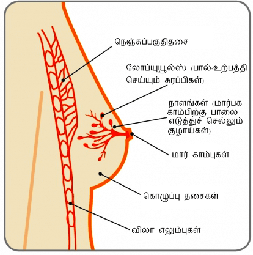

மார்காம்பு

தீங்கு விளைவிக்காத (புற்றுநோய் அல்லாத) மார்பக ஆரோக்கிய பிரச்சனைகள்
கைனெகோமாஸ்டியா
16 வயது சிறுவனான தருண், ஒரு வருட காலமாக வலது மார்பகம் வலியில்லாமல் பெரிதாவதை கவனித்தார். இது நீச்சலின் போது அவருக்கு சங்கோஜத்தை ஏற்படுத்துகிறது.
72 முதியவரான பாரத், ஆறு மாத காலமாக வலது மார்பக கட்டியுடன் தொடர்புடைய, விட்டு விட்டு ஏற்படும் அசௌகரியத்தைக் கவனித்தார்.
மார்பகம்

மார்காம்பு
கைனகோமேஸ்டியா என்றால் என்ன?
கைன்கோமேஸ்டியா என்பது ஆண் மார்பக திசுக்கள் பெரிதாவதாகும். இது பொதுவான, தீங்குவிளைக்காத (புற்றுநோய் அல்லாத) நிலை, இது முக்கியமாக டீன்ஏஜ் வயது பையன்கள் மற்றும் முதிய ஆண்களை பாதிக்கிறது. ஆனால் இது எந்த வயதிலும் உள்ள ஆண்களைப் பாதிக்ககூடும். கைனேகோமேஸ்டியா மிகவும் பொதுவானது என்றாலும், இதைப் பற்றி அதிகமாக பேசப்படுவதில்லை ஏனென்றால் சிலர், குறிப்பாக பையன்களுக்கு, இது சங்கோஜமானதாக உள்ளது. கைனகோமேஸ்டியா அடிக்கடி டீன்ஏஜ் வயது பையன்களை மிகவும் பதட்டமாக உணரச் செய்கிறது. மற்றும் அது அவர்களுக்கு எதைக் குறிக்கிறது என்பதைப் பற்றி.கவலைப்படுகிறார்கள். மூன்றில் இரண்டு டீன்ஏஜ் வயது பையன்களுக்கு ஒரளவிற்கு கைனகோமேஸ்டியா ஏற்படுகிறது. மற்றும் 90 நபர்களுக்கு தானாகவே சரியாகிவிடுகிறது.
கைனகோமேஸ்டியா ஏற்படுவதற்கான முக்கிய காரணங்கள்சிறுவர்களின் பருவமடைதல் என்பது வழக்கமாக அவர்கள் டீன்ஏஜ் வயதை அடைந்தவுடன் தொடங்குகிறது. இருந்தாலும், சில சிறுவர்கள் 10 வயது இருக்கும் போதே மாற்றங்களைக் கவனிக்ககூடும். பருவமடைதல் தொடங்கும் போது, இஸ்ட்ரோஜென் மற்றும் டெஸ்டொஸ்டீரோன் அளவுகள் அதிகரிக்கிறது. இஸ்ட்ரோஜென் மார்பகம் வளர்வதற்கு தூண்டுகிறது மற்றும் டெஸ்டொஸ்டீரோன் மார்பக வளர்ச்சியை நிறுத்துகிறது.
பருவமடைதலுடன் தொடர்புடைய மற்ற மாற்றங்களுடன், சிறுவர்கள் அவர்களுடைய மார்பகங்கள் மென்மையாவதை அல்லது வளர்ச்சியடைவதை கவனிக்கலாம். இது ஏனென்றால் பருவமடையும் போது, உடலில் இஸ்ட்ரோஜெனை விட டெஸ்ட்ரோஸ்டீரோன் அதிகமாக உள்ள நேரங்கள் இருக்கும், இது மார்பக திசுக்களுக்கு மாற்றத்தை ஏற்படுத்துகிறது. இஸ்ட்ரோஸென் அளவுகள் டெஸ்ட்ரோஸ்டீரோன் அளவுகளை விட தொடர்ந்து அதிகமாக இருந்தால், நாளங்கள் மற்றும் லோப்யூல்கள் (சிறு வட்ட வடிவங்கள்) வளர்ச்சியடையும் மற்றும் மார்பகம்(கங்கள்) பெரிதாகும் மற்றும் அதிகம் கவனிக்ககூடியதாகும்.
ஏறக்குறைய 15 வயதில், டெஸ்டோஸ்டீரோன் அளவுகள், இஸ்ட்ரோஜென் அளவுகளை விட தொடர்ச்சியாக அதிக அளவில் நிலைப் பெறத் தொடங்குகிறது. இது இஸ்ட்ரோஜென் மார்பக திசுக்கள் மீது மேலும் ஏதாவது விளைவு ஏற்படுத்துவதை நிறுத்துகிறது. ஒருவர் சுமார் 19 வயதை அடையும் போது, அவருடைய மார்பகம் அல்லது மார்பகங்கள் வழக்கமாக சுருங்கத் தொடங்குகிறது மற்றும் தட்டையாகிவிடுகிறது.
முதிர்வடைதல்ஒரு நபருக்கு வயதாகத் தொடங்கும் போது, அவர்களுக்கு அதிகமான உடல் கொழுப்பு இருக்ககூடும். இது இஸ்ட்ரோஜென்னை உற்பத்தி செய்கிறது. கூடுதலாக, ஆண்கள் வயது முதிர்வடையும் போது அவர்கள் குறைவான டெஸ்டோஸ்டீரோனை உற்பத்தி செய்கிறார்கள். இஸ்ட்ரோஜென் அளவுகள் அதிகரிப்பது மற்றும் டெஸ்டோஸ்டீரோன் அளவுகள் குறைவதன் கலவை மார்பகங்கள் பெரிதாவதற்கு வழிவகுக்கலாம். பின்னர் வாழ்க்கையில் எடை அதிகரிப்பது குறிப்பாக மார்பக பகுதியிலும் கவனிக்ககூடியதாக இருக்கலாம், இது பெரிய மார்பகங்களுக்கு வழிவகுக்கலாம். இது பொய்யான-கைனகோமேஸ்டியா என்றும் அறியப்படுகிறது. பல ஆண்கள் இந்த மாற்றத்தை வயதாகும் செயல்முறையின் மற்றொரு பகுதியாக ஏற்றுக் கொள்கிறார்கள்.
மற்ற காரணங்கள்சில மருந்துகள் (பரிந்துரைக்கப்படுவது மற்றும் சட்டத்திற்கு புறம்பானது இரண்டும்) கைனகோமேஸ்டியாவை ஏற்படுத்தக்கூடும். அவை இஸ்ட்ரோஜென் கொண்டிருக்ககூடும், இது உடலில் சுழலும் ஹார்மோன் அளவுகளை அதிகரிக்கிறது, அல்லது இஸ்ட்ரோஜென்-போன்ற விளைவுகளை ஏற்படுத்துகிறது. கானாபீஸ் போன்ற ஒரு மருந்துடன் இதுவே ஏற்படுகிறது. சில மருந்துகள் மொத்தமாக டெஸ்டோஸ்டீரோன் உற்பத்தியை தடுக்கிறது, இதன் மூலமாக சுழலும் டெஸ்டோஸ்டீரோன் அளவுகளைக் குறைகிறது. .
பல வகையான பரிந்துரைக்கப்பட்ட மருந்துகள் உடலின் ஹார்மோன் சமநிலையை மாற்றக்கூடும். உயர் இரத்த அழுத்தத்திற்காக அல்லது இருதய பிரச்சனைகளுக்காக சில மனநலப் பிரச்சனைகளுக்காக, வயிற்குப் புண்களுக்காக, சில புற்றுநோய் சிகிச்சைகள் மற்றும் சில ஆன்டிபாயடிக்ஸ் மற்றும் தசைகளை வளர்ப்பதற்கு எடுத்துச் கொள்ளப்படும் மருந்துகளும் (அனபாலிக் ஸ்டீராய்டுகள்), கைனகோமேஸ்டியா ஏற்படுத்தக்கூடும்.
மூலிகைப் பொருட்கள்சில மூலிகை சப்ளிமென்டுகள் மற்றும் குறிப்பிட்ட அழகுசாதனப் பொருட்கள் இஸ்ட்ரோஜென் கொண்டிருக்கும். இது குழந்தைகள் மற்றும் பெரியவர்கள் இருவரின் உடலில் சுழலும் ஹார்மோன் அளவுகளை அதிகரிக்கலாம் அல்லது இஸ்ட்ரோஜென் – போன்ற விளைவை ஏற்படுத்தலாம். நீங்கள் அவற்றை உபயோகிப்பதை நிறுத்தியவுடன், இந்த விளைவுகள் நின்றுவிடுகிறது மற்றும் காலப்போக்கில் மார்பக திசு உரிய அளவுகளை அடையும்..
உணவு மற்றும் எடைஒருவர் தன்னுடைய உடலில் எந்தளவு அதிகமான கொழுப்பு செல்களைக் கொண்டிருக்கிறாரோ, அந்தளவு அதிகமான இஸ்ட்ரோஜெனை அவர்கள் உற்பத்தி செய்கிறார்கள். இது மார்பக திசுக்களை வளரச் செய்யலாம். நல்ல-சமச்சீரான உணவு மற்றும் உடற்பயிற்சி ஆரோக்கியமான எடையைப் பராமரிப்பதில் முக்கியமானவை
மதுபானம்மிக அதிகமான மதுபானம் குடிப்பது பல வழிகளில் கல்லீரைப் பாதிப்பதாக மற்றும் பல பிரச்சனைகளை ஏற்படுத்துவதாக காண்பிக்கப்பட்டிருக்கிறது. அதிக அளவிலான மதுபானம் கல்லீரைத் தூண்டுகிறது, இது ஹார்மோன்களின் சமச்சீரற்ற நிலையை உருவாக்குகிறது. சுழலும் டெஸ்டோஸ்டீரோன் குறைக்கப்படுகிறது, ஆனால் இஸ்ட்ரோஜென் அளவுகள் அதிகரிக்கிறது (கல்லீரல் சுழலும் இஸ்ட்ரோஜெனை உடைப்பதை நிறுத்துவதால்). இது மார்பக திசுக்கள் வளரச்கூடும் என்பதைக் குறிக்கிறது
சில நேரங்களில் ஒருவருக்கு கைனகோமோஸ்டியா ஏற்படுவது ஏன் எனச் சொல்வது சாத்தியமில்லை. இருந்தாலும், காரணம் அறியப்படும் போதும் அதனைச் சரிசெய்வதற்கான சிகிச்சை வாய்ப்புகள் அதே போலவே இருக்கலாம்கைனகோமேஸ்டியாவின் அறிகுறிகள் என்னென்ன?
கைனகோமேஸ்டியாவின் அறிகுறிகள், மார்காம்பிற்கு பின்னால் உள்ள மார்பக திசு சிறிய அளவில் உறுதியாக விரைவடைவதிலிருந்து, அதிகமாக பெண்களின் – மார்பகம் போல தோற்றமளிக்கும் மார்பகம் வரை வேறுபடலாம். கைனகோமேஸ்டியா ஒன்று அல்லது இரு மார்பகங்களையும் பாதிக்க்க்கூடும். அந்த பகுதி தொடுவதற்கு மென்மையானதாக அல்லது வலி நிறைந்த்தாக இருக்கலாம்.
உண்மையான கைனகோமேஸ்டியா (மார்பக திசுக்கள் விரிவடைவதனால் ஏற்படுவது), பொய்யான – கைனகோமேஸ்டியாவிலிருந்து வித்தியாசப்படுகிறது. பொய்யான – கைனகோமேஸ்டியா கைனகோமேஸ்டியா என்பது கொழுப்பு திசுக்கள் அதிகரிப்பதனால் ஏற்படுவதாகும். இருந்தாலும், கைனகோமேஸ்டியா இரண்டின் கலவையாகவும் இருக்கலாம்.
சிறுவர்களில் மார்பக வளர்ச்சிகருவில் இருக்கும் போது மார்பக திசு வளர்ச்சி ஏற்படுகிறது. இந்த நேரத்தில், மார்காம்பின் பின்னால், சிறு கிளை குழாய்களை (நாளங்களை) உருவாக்குகிறது. சிறுவர்கள் தங்களுடைய டீன்ஏஜ் வயது மற்றும் பருவத்தை அடையும் வரையில், அவர்கள் மார்பக திசு பெண்களின் திசுக்களைப் போலவே இருக்கும். இருந்தாலும், அவர்கள் பருவம் எய்தும் போது, அதிகரிக்கும் ஹார்மோன் அளவுகள் மார்பக திசுக்கள் மேலும் வளர்ச்சியடைவதைப் பாதிக்கிறது
பெண்களில், இஸ்ட்ரோஜென் ஹார்மோன் மார்பகங்களை வளரச் செய்கிறது மற்றும் பால்-உற்பத்தி செய்யும் சுரப்பிகள் (லோப்யூல்ஸ்), நாளங்கள் நிறைவு பெறும் பகுதியில் உருவாகிறது, அதனால் ஒரு பெண்ணின் மார்பகங்களால் மார்காம்புகளுக்கு பால் எடுத்துச் செல்ல முடியும்.
சிறுவர்கள் பருவமடையும் போது இஸ்ட்ரோஜென் அளவுக்ள அதிகமாக இருக்கும், ஆனால் அவர்களுடைய டீன்ஏஜ் வயதின் இறுதியில் வழக்கமாக மிக அதிக அளவில் ஹார்மோன் டெஸ்டோஸ்டீரோனை கொண்டிருப்பார்கள். இது மார்பக திசுக்கள் மீது இஸ்ட்ரோஜென் விளைவை நிறுத்துகிறது மற்றம் வழக்கமாக மார்பகங்கள் தட்டையாகிவிடும்.
கைனகோமேஸ்டியா எப்படி கண்டறியப்படுகிறது?
இரண்டு மார்பகங்களையும் ஒரு நிபுணர் மற்றும் அல்ட்ராசவஜன்டு ஸ்கேன் மூலமாக மருத்துவ ரீதியிலான மார்பக பரிசோதனை செய்வது அவசியமானது. இந்த ஆரம்ப மதிப்பீட்டின் அடிப்படையில், குறிப்பாக அந்த நபர் முதியவராக இருந்தால் நிபுணர் ஒரு மேமோக்ராம் (மார்பகங்களின் எக்ஸ் ரே) மற்றும் ஒரு நீடில் பயாப்சி (எஃப் என் ஏ சி சி கோர் நீடில் பயாப்சி) கேட்கலாம்.
ஏனென்றால் கைனகோமேஸ்டியா, ஹைப்பர்தைராய்டிசம் (அதிகமாக செயல்படும் தைராய்டு சுரப்பி) போன்ற மற்ற நிலைகளின் ஒரு அறிகுறியாக இருக்கலாம், நிபுணர் கழுத்து, வயிற்றுப் பகுதி மற்றும் ஆணுறுப்புகளை பரிசோதனை செய்ய விரும்பலாம். கல்லீரல் செயல்பாட்டிற்கான பரிசோதனைகள், ஆல்ஃபா ஃபெடோ ப்ரோட்டீன் மற்றும் பி ஹெச் சி ஜி செய்யப்பட வேண்டியிருக்கலாம்
கைனகோமேஸ்டியாவிற்கான சிகிச்சை என்ன?
பெரும்பாலான நோயாளிகளில், மன உறுதி அளித்தால் மட்டுமே தேவையானது. குறிப்பிட்ட சிகிச்சை எதுவும் அறிவுறுத்தப்படுவதில்லை. சிலருக்கு, கைனகோமேஸ்டியா ஏற்படுவதற்கான காரணத்தை (மருந்துகளை மாற்றுவது, அதிகப்படியான உடல் கொழுப்பை குறைப்பது அல்லது மதுவானம் குடிப்பதைக் குறைப்பது) அகற்றுவது மட்டுமே கூடுதல் மார்பக திசுக்களை சுருக்குவதற்கு தேவையானது. சிலருக்கு நிபுணர் முடிவு செய்வதன் படி குறுகிய காலத்திற்கு மருத்துவ சிகிச்சைகள் (டானாசோல்ஃடாமோக்சிஃபென்) தேவைப்படலாம்.
பொதுவாக, வாழ்க்கை முறை மாற்றங்களுடன் மற்றும் அல்லது மருத்துவ சிகிச்சைகளுடன் கைனகோமேஸ்டியா மேம்படவில்லை என்றால் அல்லது அது நீண்ட காலமாக இருந்திருக்கிறது மற்றும் உங்கள் வாழ்க்கை தரத்தைப் பாதிக்கிறது என்றால் மட்டுமே அறுவை சிகிச்சை சிபாரிசு செய்யப்படுகிறது.
நிபுணர்கள் அறுவை சிகிச்சையை ஒரு வாய்ப்பாக தேர்ந்தெடுப்பதற்கு முன் அறுவை சிகிச்சையின் ஏதாவது அபாயங்கள் குறித்து கலந்து பேச வேண்டும் ஏனென்றால் கைனகோமேஸ்டியா நேரடியானது அல்ல. இந்த வகையான அறுவை சிகிச்சை கைனகோமேஸ்டியாவின் சைஸ் மற்றும் மார்பக பகுதியில் உள்ள அதிகப்படியான சருமத்தின் சார்ந்திருக்கும். இதன் குறிக்கோள் அதிக வழக்கமான ஆண் மார்பக அளவு நிலையில் வைப்பதாகும், மற்றும் சில நேரங்களில் இது ஒன்றுக்கும் அதிகமான அறுவை சிகிச்சையை உள்ளடக்கியது.
லிப்போசக்“ன் (பாதிக்கப்பட்ட பகுதியிலிருந்து கொழுப்பு அகற்றப்படும் ஒரு அறுவை சிகிச்சை செயல்முறை) மிகப் பொதுவான செயல்முறைகளில் ஒன்று. அது மட்டுமே ஒரு சிகிச்சையாக இருக்கலாம் அல்லது அதே சமயத்தில் மார்பகத்தை குறைப்பதற்கான அறுவை சிகிச்சையும் (மேமோப்ளாஸ்டி என்றும் அறியப்படுகிறது) மேற்கொள்ளப்படுகிறது. மார்பகத்தை குறைக்கும் ஒரு அறுவை சிகிச்சை லிப்போசக்ன் இல்லாமலும் செய்யப்படலாம். ஏனென்றால் மேலே குறிப்பிடப்பட்ட அனைத்து செயல்முறைகளும் சில மார்பக திசுக்களை விட்டுச் செல்லும், கைனகோமேஸ்டியா திரும்ப ஏற்படலாம்

கைனகோமேஸ்டியாவால் பாதிக்கப்பட்டவர்களுக்கு, அது மனச்சர்வளிப்பதாக, சங்கோஜம் அளிப்பதாக மற்றும் தனிமைப்படுத்தும் அனுபவமாக இருக்கலாம். பருவமடையும் வயதில் உள்ள மற்றும் மற்ற உடல் ரீதியிலான மாற்றங்களை கையாள வேண்டிய நிலையில் உள்ள சிறுவர்களுக்கு அவர்களுடைய வளர்ந்து வரும் மார்பகங்கள் அல்லது வலி நிறைந்த மார்பகங்கள் குறித்து யாருடனும் கலந்து பேசுவது கடினமானதாக உள்ளது. இதன் விளைவாக, டீன் ஏஜ் சிறுவர்கள் இந்த நிலை எந்தளவு சாதாரணமானது என்பதை உணர்வதில்லை. வயது முதிர்ந்த ஆண்கள் அவர்களுடைய மார்பகங்களில் ஏற்படும் மாற்றங்கள் புற்றுநோயின் அறிகுறி எனக் கவலைப்படக்கூடும்.
கைனகோமேஸ்டியா இருப்பது மார்பக புற்றுநோய் ஏற்படும் அபாயத்தை அதிகரிப்பதில்லை. இருந்தாலும், ஆண்களும் “மார்பகம் பற்றி தெரிந்து வைத்திருப்பது” மற்றும் மார்பகத்தில் ஏதேனும் புதிய மாற்றங்களைக் கவனித்தால் ஒரு நிபுணரிடம் தெரிவிப்பது முக்கியமானது.
மார்பக விழிப்புணர்வு 4 புள்ளி குறிப்பு